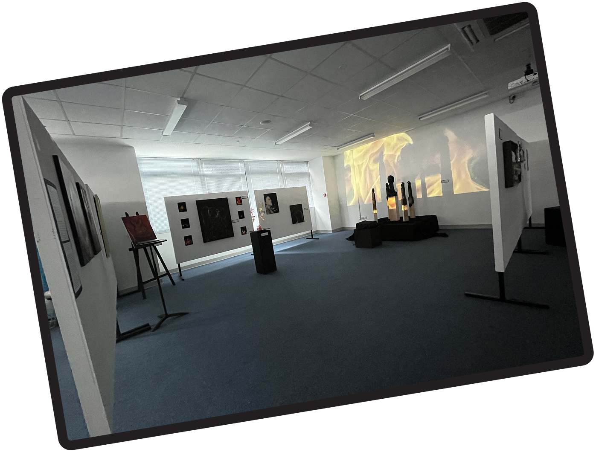

The Beginning of My Passion for the Arts
My creative journey began at age 5, when I joined one of Mumbai’s most renowned dance schools. From there, I explored it all, from roller and ice skating to a brief (but memorable) stint in state level gymnastics. After moving to Singapore, I immersed myself in visual arts through formal classes, eventually showcasing my work in two exhibitions, becoming the youngest artist in one of them. Long before I discovered UX, it was my love for the arts that shaped how I see, feel, and create.
2010-2023
